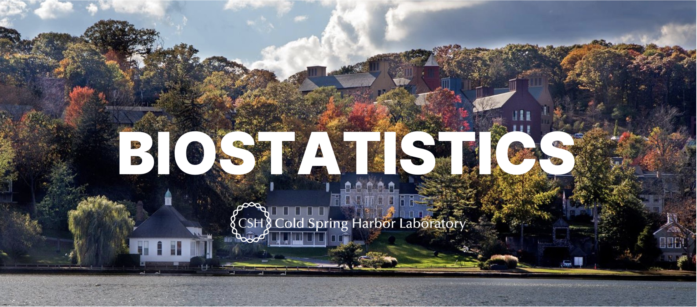

Welcome to the Biostatistics Core at CSHL, where we are dedicated to enhancing the research quality and output of our faculty, staff, and students. Offering a broad spectrum of statistical consulting services, we are equipped with advanced tools like R, Python, and the latest PASS 2024 software to ensure versatile and capable support for all your statistical needs.
Our services include assistance in study design and power calculations, selection and application of appropriate statistical methods, comprehensive data analysis, customized statistical model development, and data visualization and presentation. Whether you need help designing a study, analyzing data, or creating compelling visual representations, Biostatistics Core is here to support your research endeavors.
If you would like to communicate with the Biostatistics Core, please feel free to reach out to Taehoon Ha or Justin Kinney via email.
- Taehoon Ha (Core Director): ha@cshl.edu
- Justin Kinney (Faculty Head): jkinney@cshl.edu
They will be happy to assist with any biostatistics inquiries or provide further guidance. Please include a clear subject line and a detailed message to ensure a prompt and efficient response. Take advantage of this opportunity to reach out with your questions or concerns.
🕑 When: Thursdays, 2-4 pm
Biostatistics office hour is a Cancer-Center-sponsored core resource
whose goal is to provide for, enhance, and/or facilitate statistical
collaboration involving the design, conduct, analysis, or publication of
biomedical research at Cold Spring Harbor Laboratory. This is one-hour
complimentary statistical advice only for the CSHL Cancer Center
faculty, staff, and students.
📧 How to schedule an appointment: